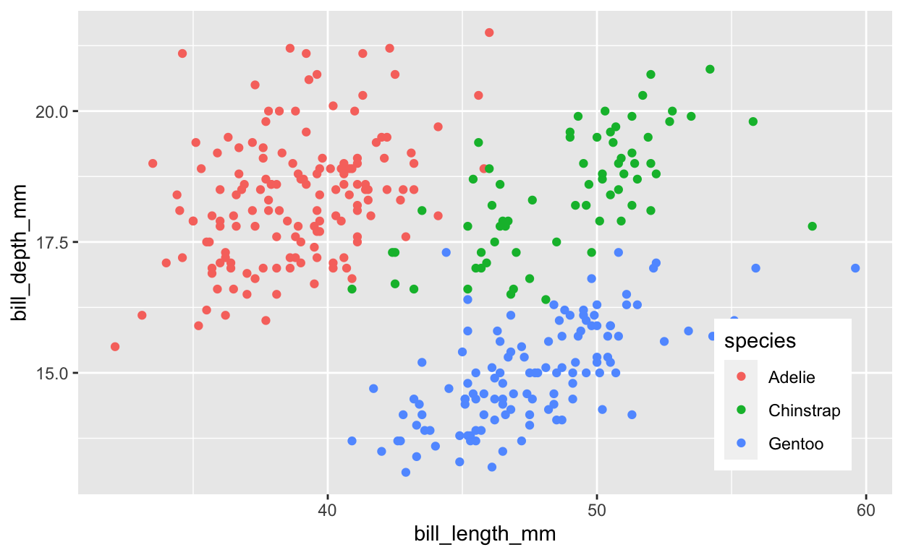
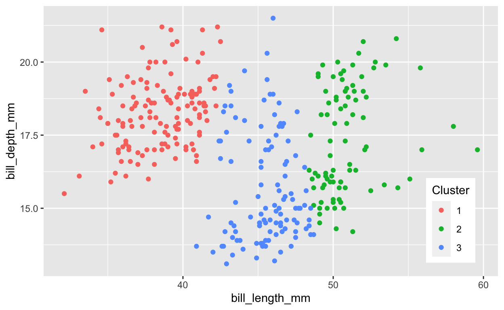

Learning Objectives
In this lab, you will play with unsupervised classification techniques while working with ecological community datasets.
Comparing species counts between sites using distance metrics:
Euclidean calculates the distance between a virtualized space using Pythagorean theorem.
Manhattan calculates integer around the block difference.
Bray-Curtis dissimilarity is based on the sum of lowest counts of shared species between sites over the sum of all species. A dissimilarity value of 1 is completely dissimilar, i.e.no species shared. A value of 0 is completely identical.
Clustering
K-Means clustering with function
kmeans()given a pre-assigned number of clusters assigns membership centroid based on reducing within cluster variation.- Voronoi diagrams visualizes regions to nearest points, useful here to show membership of nodes to nearest centroid.
Hierarchical clustering allows for a non-specific number of clusters.
Agglomerative hierarchical clustering, such as with
diana(), agglomerates as it builds the tree. It is good at identifying small clusters.Divisive hierarchical clustering, such as with
agnes(), divides as it builds the tree. It is good at identifying large clusters.Dendrograms visualize the branching tree.
Ordination (coming Monday)
1 Clustering
Clustering associates similar data points with each other, adding a grouping label. It is a form of unsupervised learning since we dont fit the model based on feeding it a labeled response (i.e.\(y\)).
1.1 K-Means Clustering
Source: K Means Clustering in R | DataScience+
In k-means clustering, the number of clusters needs to be specified. The algorithm randomly assigns each observation to a cluster, and finds the centroid of each cluster. Then, the algorithm iterates through two steps:
- Reassign data points to the cluster whose centroid is closest.
- Calculate new centroid of each cluster.
These two steps are repeated until the within cluster variation cannot be reduced any further. The within cluster variation is calculated as the sum of the euclidean distance between the data points and their respective cluster centroids.
1.1.1 Load and plot the penguins dataset
The penguins dataset comes from Allison Horsts palmerpenguins R package and records biometric measurements of different penguin species found at Palmer Station, Antarctica (Gorman, Williams, and Fraser 2014). It is an alternative to the iris dataset example for exploratory data analysis (to avoid association of this 1935 datasets collector Ronald Fisher who held strong views on race and eugenics). Use of either dataset will be acceptable for submission of this lab (and mention of iris or Fisher will be dropped for next year).


# load R packages
librarian::shelf(
dplyr, DT, ggplot2, palmerpenguins, skimr, tibble)
# set seed for reproducible results
set.seed(42)
# load the dataset
data("penguins")
# look at documentation in RStudio
if (interactive())
help(penguins)
# show data table
datatable(penguins)
# skim the table for a summary
skim(penguins)
| Name | penguins |
| Number of rows | 344 |
| Number of columns | 8 |
| _______________________ | |
| Column type frequency: | |
| factor | 3 |
| numeric | 5 |
| ________________________ | |
| Group variables | None |
Variable type: factor
| skim_variable | n_missing | complete_rate | ordered | n_unique | top_counts |
|---|---|---|---|---|---|
| species | 0 | 1.00 | FALSE | 3 | Ade: 152, Gen: 124, Chi: 68 |
| island | 0 | 1.00 | FALSE | 3 | Bis: 168, Dre: 124, Tor: 52 |
| sex | 11 | 0.97 | FALSE | 2 | mal: 168, fem: 165 |
Variable type: numeric
| skim_variable | n_missing | complete_rate | mean | sd | p0 | p25 | p50 | p75 | p100 | hist |
|---|---|---|---|---|---|---|---|---|---|---|
| bill_length_mm | 2 | 0.99 | 43.92 | 5.46 | 32.1 | 39.23 | 44.45 | 48.5 | 59.6 | |
| bill_depth_mm | 2 | 0.99 | 17.15 | 1.97 | 13.1 | 15.60 | 17.30 | 18.7 | 21.5 | |
| flipper_length_mm | 2 | 0.99 | 200.92 | 14.06 | 172.0 | 190.00 | 197.00 | 213.0 | 231.0 | |
| body_mass_g | 2 | 0.99 | 4201.75 | 801.95 | 2700.0 | 3550.00 | 4050.00 | 4750.0 | 6300.0 | |
| year | 0 | 1.00 | 2008.03 | 0.82 | 2007.0 | 2007.00 | 2008.00 | 2009.0 | 2009.0 |
# remove the rows with NAs
penguins <- na.omit(penguins)
# plot petal length vs width, species naive
ggplot(
penguins, aes(bill_length_mm, bill_depth_mm)) +
geom_point()

# plot petal length vs width, color by species
legend_pos <- theme(
legend.position = c(0.95, 0.05),
legend.justification = c("right", "bottom"),
legend.box.just = "right")
ggplot(
penguins, aes(bill_length_mm, bill_depth_mm, color = species)) +
geom_point() +
legend_pos

1.1.2 Cluster penguins using kmeans()
# cluster using kmeans
k <- 3 # number of clusters
penguins_k <- kmeans(
penguins %>%
select(bill_length_mm, bill_depth_mm),
centers = k)
# show cluster result
penguins_k
K-means clustering with 3 clusters of sizes 136, 85, 112
Cluster means:
bill_length_mm bill_depth_mm
1 38.42426 18.27794
2 50.90353 17.33647
3 45.50982 15.68304
Clustering vector:
[1] 1 1 1 1 1 1 1 1 1 1 1 1 1 1 3 1 1 1 1 1 1 1 1 1 1 1 1 1 1 1 1 1
[33] 1 1 1 1 1 1 3 1 1 1 1 1 1 1 1 1 1 1 1 1 1 1 1 1 1 1 1 1 1 1 1 1
[65] 1 1 1 3 1 3 1 1 1 1 1 3 1 1 1 1 1 1 1 1 1 1 1 1 1 1 1 1 1 3 1 1
[97] 1 1 1 1 1 1 1 3 1 3 1 1 1 3 1 1 1 1 1 1 1 1 1 1 1 1 1 3 1 3 1 1
[129] 1 1 1 1 1 1 1 1 1 1 1 1 1 1 1 1 1 1 3 2 3 2 3 3 3 3 3 3 3 2 3 3
[161] 3 2 3 2 3 2 2 3 3 3 3 3 3 3 2 3 3 3 2 2 2 3 3 3 2 3 2 3 2 2 3 3
[193] 2 3 3 3 3 3 2 3 3 3 3 3 2 3 3 3 2 3 2 2 3 2 3 3 3 3 3 2 3 2 3 3
[225] 2 2 3 2 3 2 3 2 3 2 3 2 3 2 3 2 2 3 3 2 3 2 3 2 3 3 2 3 3 2 2 3
[257] 2 3 2 2 3 3 2 3 2 3 2 2 3 2 3 3 2 3 2 3 2 3 2 3 2 2 2 3 2 3 2 3
[289] 2 3 2 2 2 3 2 1 2 3 2 2 3 3 2 3 2 2 3 2 3 2 2 2 2 2 2 3 2 3 2 3
[321] 2 3 2 2 3 2 3 3 2 3 2 2 2
Within cluster sum of squares by cluster:
[1] 904.9838 617.9859 742.0970
(between_SS / total_SS = 79.8 %)
Available components:
[1] "cluster" "centers" "totss" "withinss"
[5] "tot.withinss" "betweenss" "size" "iter"
[9] "ifault" # compare clusters with species (which were not used to cluster)
table(penguins_k$cluster, penguins$species)
Adelie Chinstrap Gentoo
1 135 1 0
2 0 40 45
3 11 27 74Question: Comparing the observed species plot with 3 species with the kmeans() cluster plot with 3 clusters, where does this unsupervised kmeans() technique (that does not use species to fit the model) produce similar versus different results? One or two sentences would suffice. Feel free to mention ranges of values along the axes.
# extract cluster assignment per observation
Cluster = factor(penguins_k$cluster)
ggplot(penguins, aes(bill_length_mm, bill_depth_mm, color = Cluster)) +
geom_point() +
legend_pos

1.1.3 Plot Voronoi diagram of clustered penguins
This form of clustering assigns points to the cluster based on nearest centroid. You can see the breaks more clearly with a Voronoi diagram.
librarian::shelf(ggvoronoi, scales)
# define bounding box for geom_voronoi()
xr <- extendrange(range(penguins$bill_length_mm), f=0.1)
yr <- extendrange(range(penguins$bill_depth_mm), f=0.1)
box <- tribble(
~bill_length_mm, ~bill_depth_mm, ~group,
xr[1], yr[1], 1,
xr[1], yr[2], 1,
xr[2], yr[2], 1,
xr[2], yr[1], 1,
xr[1], yr[1], 1) %>%
data.frame()
# cluster using kmeans
k <- 3 # number of clusters
penguins_k <- kmeans(
penguins %>%
select(bill_length_mm, bill_depth_mm),
centers = k)
# extract cluster assignment per observation
Cluster = factor(penguins_k$cluster)
# extract cluster centers
ctrs <- as.data.frame(penguins_k$centers) %>%
mutate(
Cluster = factor(1:k))
# plot points with voronoi diagram showing nearest centroid
ggplot(penguins, aes(bill_length_mm, bill_depth_mm, color = Cluster)) +
geom_point() +
legend_pos +
geom_voronoi(
data = ctrs, aes(fill=Cluster), color = NA, alpha=0.5,
outline = box) +
scale_x_continuous(expand = c(0, 0)) +
scale_y_continuous(expand = c(0, 0)) +
geom_point(
data = ctrs, pch=23, cex=2, fill="black")
Task: Show the Voronoi diagram for fewer (k=2) and more (k=8) clusters to see how assignment to cluster centroids work.
1.2 Hierarchical Clustering
Next, youll cluster sites according to species composition. Youll use the dune dataset from the vegan R package and follow along with these source texts:
- Ch. 8-9 (p.123-152) (Kindt and Coe 2005)
- 21.3.1 Agglomerative hierarchical clustering (Greenwell, n.d.)
1.2.1 Load dune dataset
librarian::shelf(
cluster, vegan)
# load dune dataset from package vegan
data("dune")
# show documentation on dataset if interactive
if (interactive())
help(dune)
Question: What are the rows and columns composed of in the dune data frame?
1.2.2 Calculate Ecological Distances on sites
Before we calculate ecological distance between sites for dune, lets look at these metrics with a simpler dataset, like the example given in Chapter 8 by Kindt and Coe (2005).
sites <- tribble(
~site, ~sp1, ~sp2, ~sp3,
"A", 1, 1, 0,
"B", 5, 5, 0,
"C", 0, 0, 1) %>%
column_to_rownames("site")
sites
sp1 sp2 sp3
A 1 1 0
B 5 5 0
C 0 0 1sites_manhattan <- vegdist(sites, method="manhattan")
sites_manhattan
A B
B 8
C 3 11sites_euclidean <- vegdist(sites, method="euclidean")
sites_euclidean
A B
B 5.656854
C 1.732051 7.141428sites_bray <- vegdist(sites, method="bray")
sites_bray
A B
B 0.6666667
C 1.0000000 1.00000001.2.3 Bray-Curtis Dissimilarity on sites
Lets take a closer look at the Bray-Curtis Dissimilarity distance:
\[ B_{ij} = 1 - \frac{2C_{ij}}{S_i + S_j} \]
\(B_{ij}\): Bray-Curtis dissimilarity value between sites \(i\) and \(j\).
1 = completely dissimilar (no shared species); 0 = identical.\(C_{ij}\): sum of the lesser counts \(C\) for shared species common to both sites \(i\) and \(j\)
\(S_{i OR j}\): sum of all species counts \(S\) for the given site \(i\) or \(j\)
So to calculate Bray-Curtis for the example sites:
\(B_{AB} = 1 - \frac{2 * (1 + 1)}{2 + 10} = 1 - 4/12 = 1 - 1/3 = 0.667\)
\(B_{AC} = 1 - \frac{2 * 0}{2 + 1} = 1\)
\(B_{BC} = 1 - \frac{2 * 0}{10 + 1} = 1\)
1.2.4 Agglomerative hierarchical clustering on dune
See text to accompany code: HOMLR 21.3.1 Agglomerative hierarchical clustering.
# Dissimilarity matrix
d <- vegdist(dune, method="bray")
dim(d)
NULLas.matrix(d)[1:5, 1:5]
1 2 3 4 5
1 0.0000000 0.4666667 0.4482759 0.5238095 0.6393443
2 0.4666667 0.0000000 0.3414634 0.3563218 0.4117647
3 0.4482759 0.3414634 0.0000000 0.2705882 0.4698795
4 0.5238095 0.3563218 0.2705882 0.0000000 0.5000000
5 0.6393443 0.4117647 0.4698795 0.5000000 0.0000000# Hierarchical clustering using Complete Linkage
hc1 <- hclust(d, method = "complete" )
# Dendrogram plot of hc1
plot(hc1, cex = 0.6, hang = -1)
# Compute agglomerative clustering with agnes
hc2 <- agnes(dune, method = "complete")
# Agglomerative coefficient
hc2$ac
[1] 0.5398129# Dendrogram plot of hc2
plot(hc2, which.plot = 2)
# methods to assess
m <- c( "average", "single", "complete", "ward")
names(m) <- c( "average", "single", "complete", "ward")
# function to compute coefficient
ac <- function(x) {
agnes(dune, method = x)$ac
}
# get agglomerative coefficient for each linkage method
purrr::map_dbl(m, ac)
average single complete ward
0.4067153 0.2007896 0.5398129 0.6939994 # Compute ward linkage clustering with agnes
hc3 <- agnes(dune, method = "ward")
# Agglomerative coefficient
hc3$ac
[1] 0.6939994# Dendrogram plot of hc3
plot(hc3, which.plot = 2)
1.2.5 Divisive hierarchical clustering on dune
See text to accompany code: HOMLR 21.3.2 Divisive hierarchical clustering.
# compute divisive hierarchical clustering
hc4 <- diana(dune)
# Divise coefficient; amount of clustering structure found
hc4$dc
[1] 0.52876771.2.6 Determining optimal clusters
See text to accompany code: HOMLR 21.4 Determining optimal clusters.
librarian::shelf(factoextra)
# Plot cluster results
p1 <- fviz_nbclust(dune, FUN = hcut, method = "wss", k.max = 10) +
ggtitle("(A) Elbow method")
p2 <- fviz_nbclust(dune, FUN = hcut, method = "silhouette", k.max = 10) +
ggtitle("(B) Silhouette method")
p3 <- fviz_nbclust(dune, FUN = hcut, method = "gap_stat", k.max = 10) +
ggtitle("(C) Gap statistic")
# Display plots side by side
gridExtra::grid.arrange(p1, p2, p3, nrow = 1)
1.2.7 Working with dendrograms
See text to accompany code: HOMLR 21.5 Working with dendrograms.
# Construct dendorgram for the Ames housing example
hc5 <- hclust(d, method = "ward.D2" )
dend_plot <- fviz_dend(hc5)
dend_data <- attr(dend_plot, "dendrogram")
dend_cuts <- cut(dend_data, h = 8)
fviz_dend(dend_cuts$lower[[2]])
# Ward's method
hc5 <- hclust(d, method = "ward.D2" )
# Cut tree into 4 groups
k = 4
sub_grp <- cutree(hc5, k = k)
# Number of members in each cluster
table(sub_grp)
sub_grp
1 2 3 4
8 6 4 2 # Plot full dendogram
fviz_dend(
hc5,
k = k,
horiz = TRUE,
rect = TRUE,
rect_fill = TRUE,
rect_border = "jco",
k_colors = "jco")